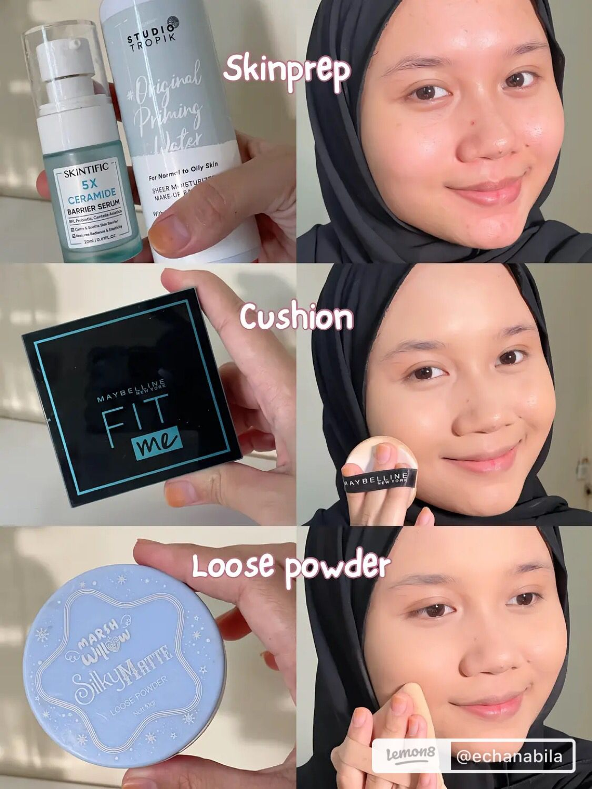
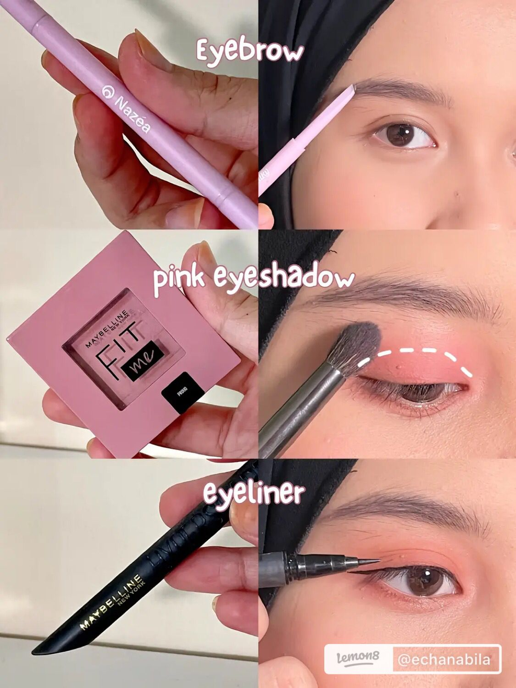
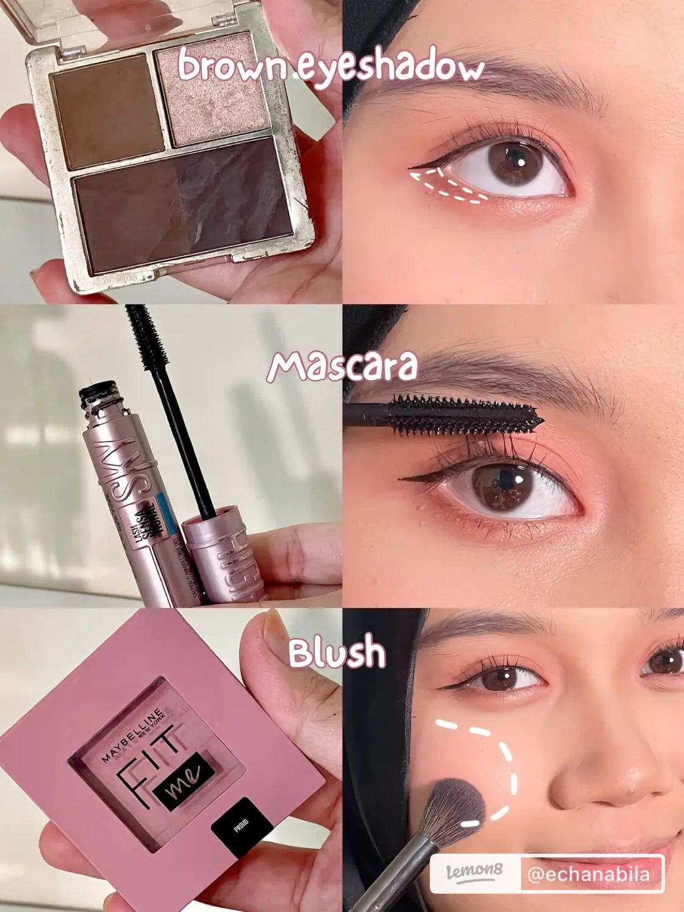
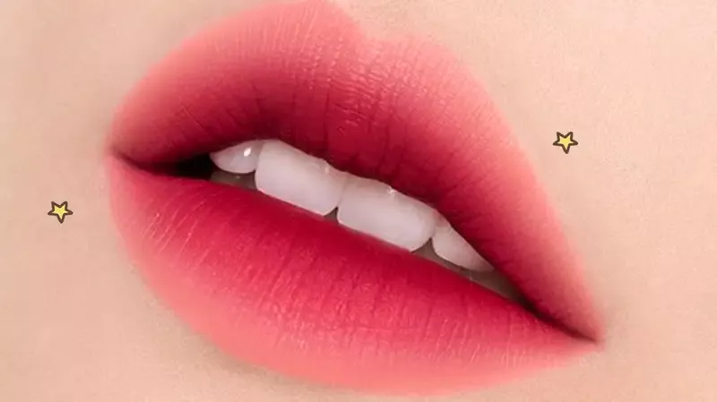

HOW TO MAKEUP KOREAN?
|
|

|

|

|
1. Skin Preparation
Pernah kesal dengan hasil makeup yang cakey atau tidak menempel dengan baik pada kulit? Bisa jadi kalian belum skin prep guys!
Skin prep merupakan proses yang dilakukan sebelum makeup, gunanya untuk mempersiapkan kulit agar dalam keadaan bersih dan terhidrasi dengan baik sebelum pengaplikasian makeup.
Kunci dari makeup anti cakey serta tahan lama adalah kulit yang bersih dan super lembap
2. Using Cushion
Dengan produk yang tersisa pada aplikator puff, aplikasikan produk pada area dahi, dagu, sisi hidung dan bagian tengah wajah.
Aplikasikan satu layer lagi pada area T-Zone dan area di bawah mata untuk efek concealing.
tidak disarankan menggesek puff pada saat mengaplikasikan produk, melainkan menggunakan ujung jari pada aplikator puff dan menepuk wajah secara perlahan seperti sedang mengisi produk pada pori-pori
3. Use Loose Powder
Loose powder ini juga menggunakan Seamless Look Technology,
teknologi partikel halus melapisi kulit dengan sempurna tanpa terlihat kering dan mengelupas.
Cara pengaplikasiannya pada wajah sangat mudah, ambil powder secukupnya menggunakan puff atau brush,
kemudian aplikasikan dengan lembut pada wajah secara merata |
1. Eyebrow
Bentuk bingkai bentuk alis ala Korea, jangan mengikuti bentuk asli alis kalian yah ladies.
Sikat kembali alis kalian agar terlihat makin natural.
Penambahan Eyebrow Mascara ini untuk mempertegas alis kalian.
Sikat dengan hati-hati dan jangan terlalu tebal dalam mengaplikasikan eyebrow mascara ini ya ladies, agar hasilnya tidak menggumpal dan terlihat natural.
2. Pilih palet warna eyeshadow.
Triknya, pilihlah tiga warna utama, yani warna yang lebih terang, warna yang lebih gelap, dan warna di antara keduanya yang paling mendekati warna kulit.
Selanjutnya, aplikasikan primer eyeshadow pada kelopak mata. Primer berfungsi layaknya alas yang bisa membantu tampilan mata cantikmu bertahan sepanjang hari.
Oleskan eyeshadow dasar menggunakan warna netral yang mirip dengan warna kulit alami.
3. Use Eyeliner product
Agar hasilnya lebih presesi, ketika memakai eyeliner pastikan posisi tangan dan kepala kamu sudah benar.
Biar lebih stabil, gambar eyeliner dengan posisi duduk dan letakan tangan pada meja.
Hal ini bisa meminimalisir kesalahan dan hasil lebih maksimal. Jangan lupa untuk menyiapkan cermin, ya! |
1. Brown Eyeshadow
Gunakan warna yang lebih terang di bawah alis dan di sudut dalam tulang alis. Area ini adalah tempat ideal bagi eyeshadow atau highlighter berwarna lebih terang agar terlihat makin popped up.
2. Using Mascara
Sesuaikan pemakaian mascara sesuai kebutuhan dan tema look korean makeup
Maskara yang bagus memiliki sejumlah manfaat yang membuat penampilan terlihat lebih cantik, seperti secara instan menambah volume dan panjang bulu mata serta membuatnya lentik, membuat mata tampak lebih besar dan 'terbuka'.
3. Use Blush on
bubuhkan di puncak tulang pipi, sering disebut dengan apple of your cheeks, lalu dibaurkan menggunakan spons atau kuas blush on ke arah luar
Blush on atau perona pipi merupakan salah satu sediaan kosmetika yang digunakan untuk memberikan warna atau menambah estetika pada rias wajah. Perona pipi mengandung pigmen yang rendah hingga tinggi sehingga warna yang dihasilkan cenderung bervariasi.. |

|

|
1. Contouring Nose
Contour digunakan untuk membuat muka kamu tampak lebih terstruktur dan tirus. Tidak hanya itu, contour juga bisa digunakan untuk menonjolkan berbagai fitur wajah. Mulai dari hidung yang lebih mancung, dahi yang lebih kecil, pipi yang lebih tirus,
2. Using Highlighter
Untuk membuat make up glowing, kamu hanya perlu satu produk saja yaitu highlighter. Ya, fungsi highlighter adalah membuat tampilan make up lebih glowing, karena umumnya highlighter akan menampilkan kilap yang ketika terkena sinar matahari atau flash kamera membuat wajah kamu terlihat lebih glowing dan cerah
3. Use Lip Cream
Kamu bisa menggunakan lip cream sebagai pewarna bibirmu. Seperti namanya, lip cream adalah produk pewarna bibir dengan tekstur yang cair namun sedikit kental atau creamy. Oleh sebab itu, biasanya lip cream juga sering disebut sebagai liquid lipstick atau lipstik cair. |
Ombre Lips ala Korea
Apa itu Ombre lips ala Korea?
Makeup ala Korea terutama yang digunakan oleh para idol K-Pop, seringkali menonjolkan ombre lips sebagai rahasia untuk menciptakan tampilan yang imut, segar, dan mempesona. Ombre lips adalah teknik pengaplikasian lipstik yang menciptakan efek gradasi warna dari gelap ke terang pada bibir. |